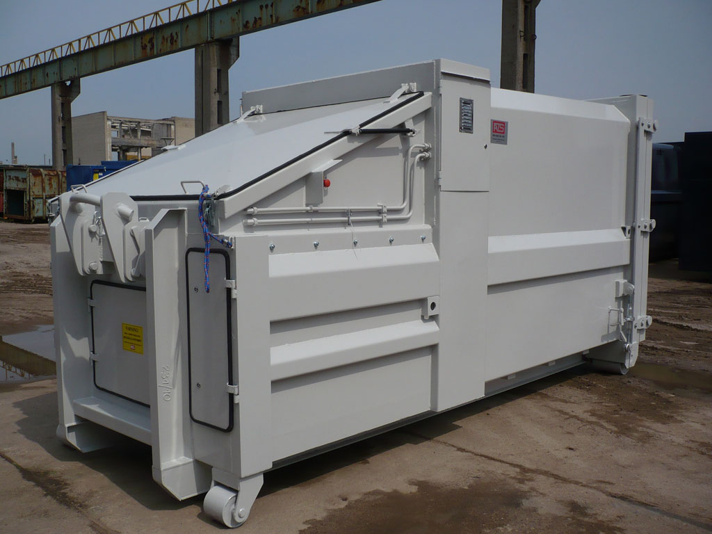

Prescontainer Standard

Informatii generale
Beneficiati de: Reducerea drastica a costurilor de evacuare a deseurilor cu prescontainerele MBT. Puteti sa cantariti si sa urmariti cantitatea de deseuri evacuata. Simplificati procedurile de raportare la autoritatile de mediu. Va aliniati la politica de mediu. Obtineti mai mult venit de pe seama materialelor reciclabile. Sunt 100% compatibile cu orice sistem de transport folosit de catre operatorii Dvs. NU necesita pregatire sau certificare ISCIR sau de alta natura. Operatii simple, automate. Doar arunci materialul si apesi butonul verde. Avertizare luminoasa si prin SMS cand va fi plin.
Specificatii generale